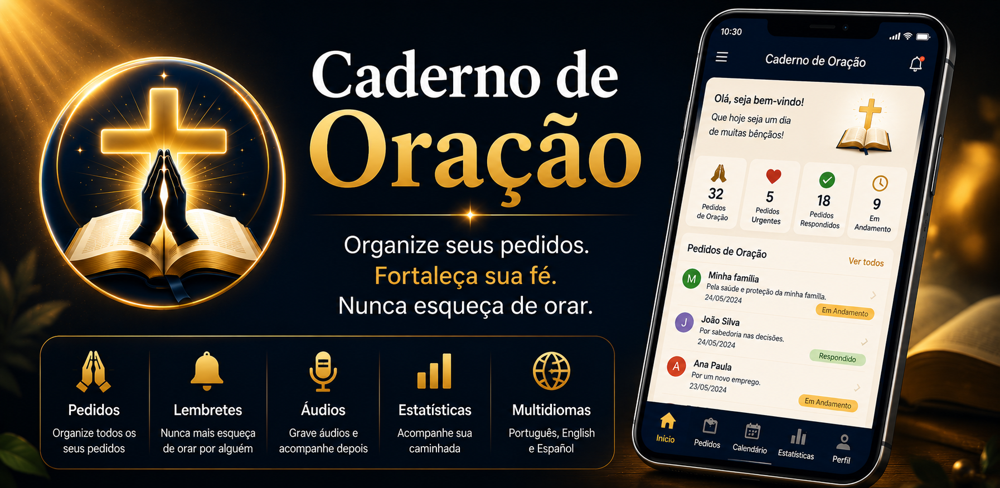
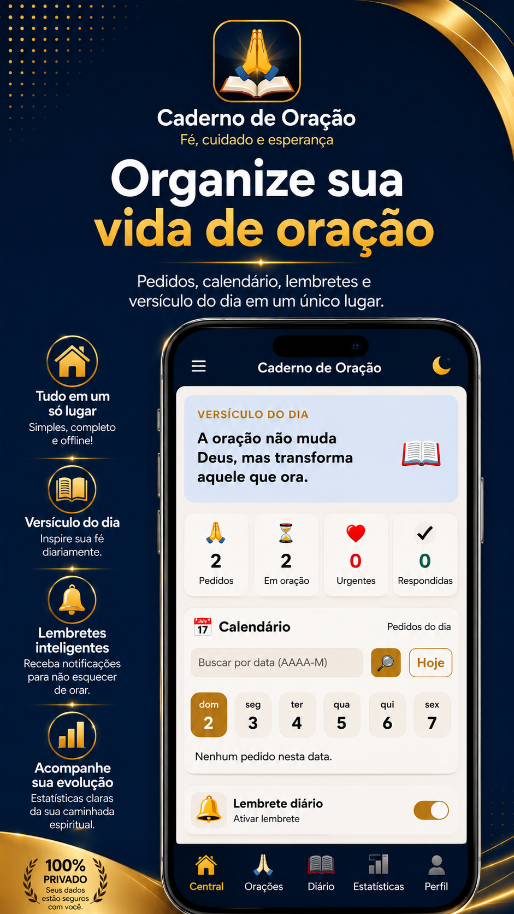
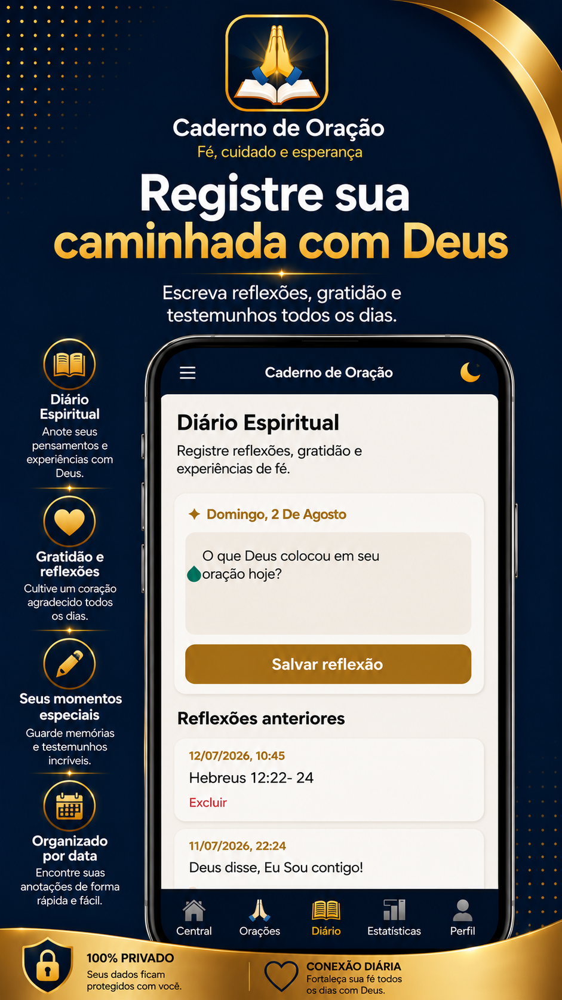
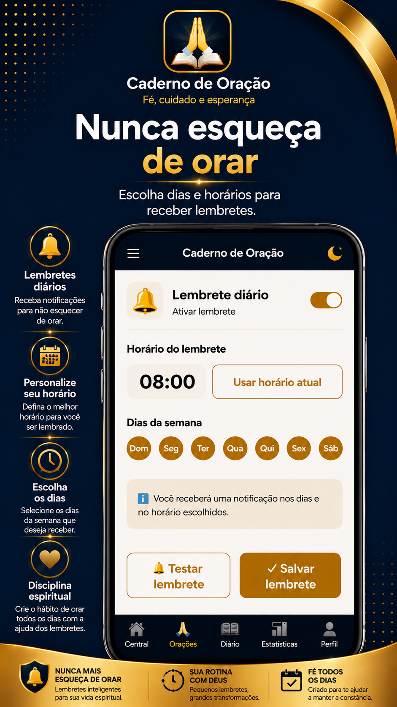
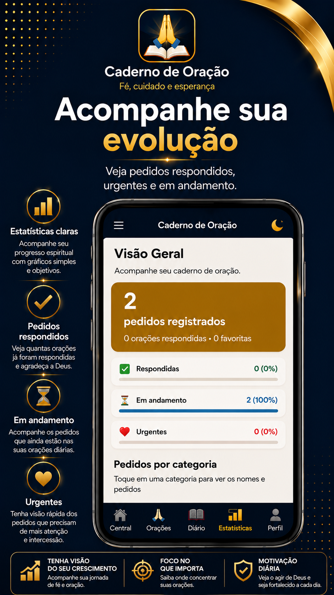
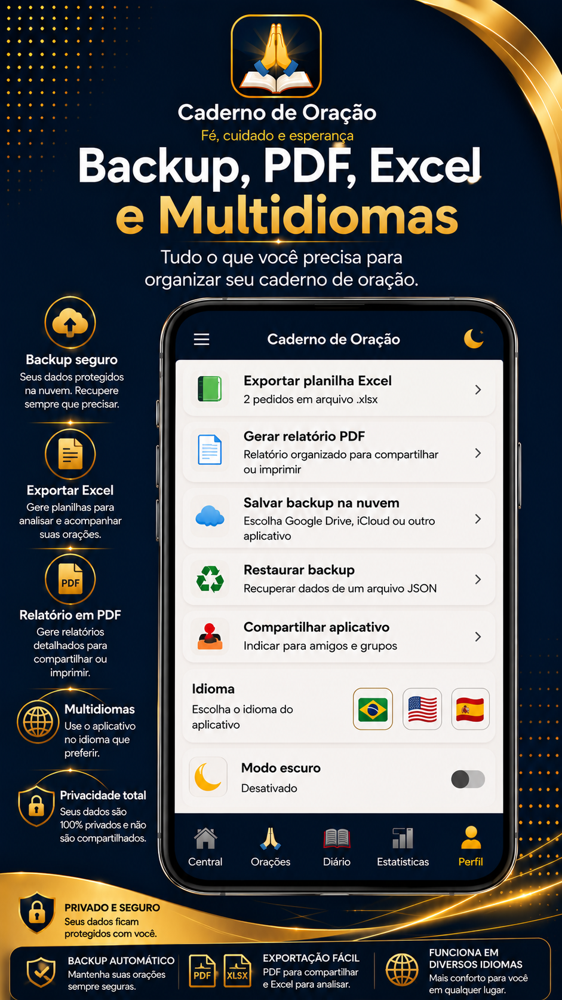

Pedidos de oração
Cadastre pedidos ilimitados com nome, telefone, categoria, foto, áudio e anotações.
Cadastre pedidos, acompanhe respostas, registre testemunhos, grave áudios, adicione fotos e fortaleça sua caminhada espiritual em um único aplicativo.

Recursos simples, completos e pensados para uso pessoal, grupos, igrejas e ministérios.
Cadastre pedidos ilimitados com nome, telefone, categoria, foto, áudio e anotações.
Registre reflexões, gratidão, estudos e testemunhos importantes da sua caminhada.
Escolha os dias da semana e o melhor horário para manter sua rotina de oração.
Acompanhe pedidos urgentes, respondidos, em oração e organizados por categoria.
Crie backups e exporte informações em PDF e Excel quando precisar.
Use o aplicativo em Português, Inglês ou Espanhol com troca instantânea.
Uma interface acolhedora, organizada e fácil de usar.





Acreditamos que uma vida de oração organizada fortalece a fé, aproxima pessoas de Deus e preserva momentos que não devem ser esquecidos.
O Caderno de Oração nasceu para ser uma ferramenta simples, acolhedora e segura, ajudando cada pessoa a acompanhar sua caminhada espiritual todos os dias.
Respostas rápidas para as principais dúvidas.
Os registros permanecem no aparelho e só são exportados, compartilhados ou salvos em backup quando você escolhe fazer isso.
Sim. Os principais recursos funcionam offline, incluindo pedidos, diário, estatísticas e organização dos dados.
Sim. O aplicativo permite criar backup e restaurar seus dados posteriormente.
Sim. Você pode exportar informações em PDF e Excel diretamente pelo aplicativo.
Português, Inglês e Espanhol.
O Caderno de Oração foi criado para ajudar você a cuidar de cada pedido com mais organização, constância e fé.
Em breve na Google Play